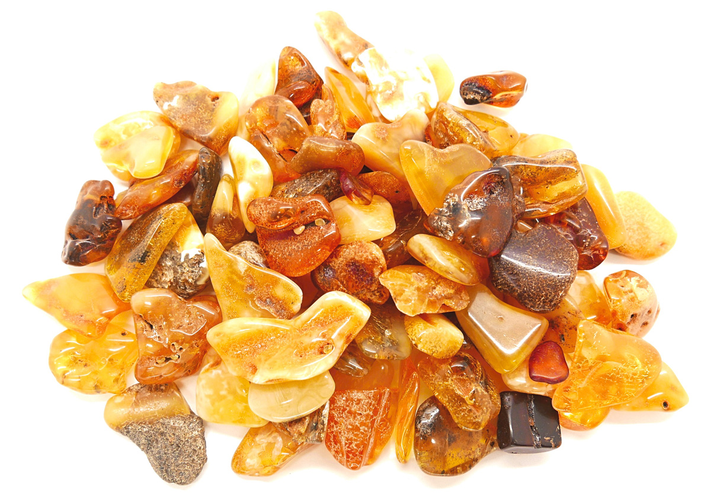
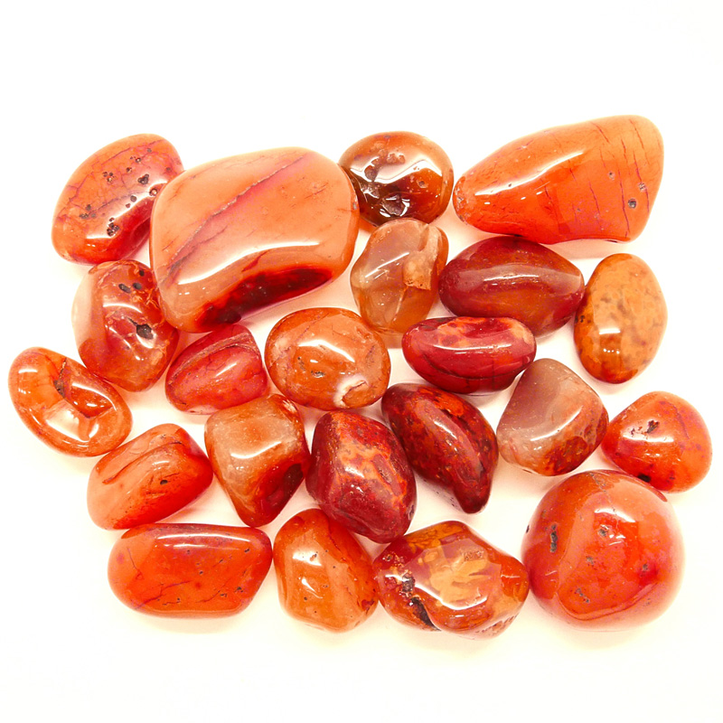
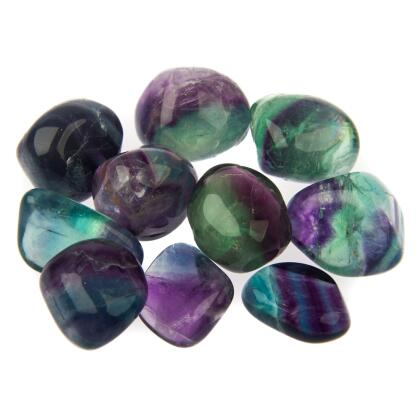
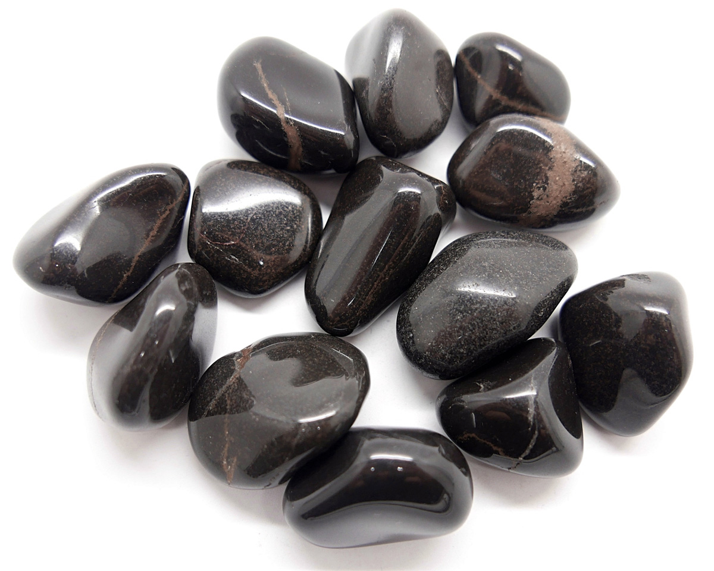

Cristales
Amatista
Aumenta la inteligencia, preservando de las enfermedades contagiosas y la gota. Purifica y armoniza el ambiente en que se vive o trabaja, trasmutando las energías negativas en positivas. Es una piedra de poder, energía, pureza y justicia. Sirve de protección, paz y espiritualidad pues no permite la tristeza ni la injusticia. Desarrolla el poder psíquico y produce buena suerte. Es la puerta de las fuerzas espirituales superiores. Relacionada con los chakra coronaria y tercer ojo.
Ambar
Aleja males negativos y es un amuleto de buena suerte. Es portadora de energías cósmicas y quien la usa siente atracción por todo lo divino y superior. Es clave para la estabilidad emocional, espiritual y terrenal. La primera manifestación de electricidad conocida fue a través del ámbar.
Cornalina
Atrae la buena suerte y la alegría de vivir. Es la piedra vital del optimismo, de la armonía. Efecto relajante para quien la usa, disipa los momentos de malhumor, cólera y rabia. Promueve el interés por nuevas aventuras, nuevos negocios, nuevas perspectivas. Facilita la concentración para meditar. Crea un sentido de bienestar. Afinidad con los chakras coronaria y base.
Fluorita
Piedra ornamental que estuvo de moda en la época victoriana. Ofrece conocimiento y mística a quienes deseen introducirse en la sabiduría y verdad cósmica, a través del tercer ojo. Imprescindible por sus cualidades en la meditación. Efecto equilibrante entre lo negativo y positivo, creando sensaciones de serenidad en el entorno de las personas. Afín a la amatista por sus poderes de trasmutación. Su vibración sanadora es muy potente, trabajando con éxitos en cuadros cerebrales como delirio de persecución, irritabilidades, neurosis, epilepsia y mal de Parkinson. En la tonalidad verde, calma y relaja situaciones difíciles. Pocas son las piedras que, como ella, contribuyen a la creación de un estado interno de paz y silencio en el que todo se inmoviliza y el tiempo parece detenerse. También las hay en tonalidades verde amarillo, rojo oscuro, rosadas y cristalinas. Perfecta para los chakras frontal y plexo solar.
Onix
Proporciona y regala alegría, simpatía, encanto personal y seducción. La magia del pasado trabajó mucho con ella en forma positiva, pues servía para disipar el malhumor y dar paso a la tranquilidad, calmando el nerviosismo y relajando las tensiones. Ofrece un fuerte poder en quien las usa,especialmente por su capacidad estabilizante que ayuda en los chakras para sus desbloqueos energéticos. Para tales desbloqueos son ideales los discos de ónix